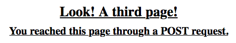

22.8. Redirecting¶
The term redirect means to send a user from one URL to a different one. We can see a simple example of this with an HTML link element:
<a href="target_URL">Link text</a>
target_URL is the address for the new webpage.
Example
For this link,
href="https://www.python.org/".
Sometimes, clicking a link opens a new tab in the browser. Other times, the new page loads in the current tab. In both cases, users are sent to a different URL. This can be confirmed by looking at the address bar before and after the redirect.
We have also set up redirects with the action attribute in a form.
Example
In the Forms chapter, we sent requests to a server.
1 2 3 | <form action="URL_of_server" method="POST">
<!-- Form code -->
</form>
|
When the user clicks the Submit button, an HTTP request is sent to the URL
assigned to action. This address doesn’t have to be the same as the form
page.
When the server responds to the request, the browser renders a webpage, and a new URL appears in the address bar.
22.8.1. Render Template vs. Redirect¶
Up until now, we’ve used the render_template() function to send an HTML
file from the Flask server to the browser. Once the page renders, the URL in
the address bar looks something like http://127.0.0.1:5000/path. For each
page in our website, path is different.
It is important to recognize that the render_template() function is NOT the
same thing as a redirect. The best way to see this is with an example.
Try It!
The practice website we’ve built for this chapter, currently has three
pages. We’ll use second.html and third.html for this example.
Open
second.htmland add a short form after theh2:4 5 6 7 8 9 10 11 12 13 14
<h2>Look! A second page!</h2> <section class="centered"> <form action="/second" method="POST"> <h3>Move to the third page?</h3> <label><input type="radio" name="choice" value="yes"/>Yes</label> <label><input type="radio" name="choice" value="no"/>No</label> <section class="centered"> <button>Submit</button> </section> </form> </section>
The new form asks the user if they want to move to the third page. The
actionattribute sends the response to the current URL.Now open
main.pyand update the function that controls the second page:25 26 27 28 29 30 31 32 33 34 35 36 37 38 39
@app.route('/second', methods=['GET', 'POST']) def second_page(): tab_title = "Second Page" page_title = "Second Page" if request.method == 'POST': choice = request.form['choice'] if choice == 'yes': return render_template('third.html', tab_title = tab_title, page_title = page_title, navigation = navigation) else: page_title = "Welcome Back!" return render_template('second.html', tab_title = tab_title, page_title = page_title, navigation = navigation)
If the user responds No in the form, line 36 executes, followed by the
render_template() function on line 38. The second page reloads, but it
shows different text in the heading. (TRY IT!)
If the user responds Yes in the form, line 33 executes. It renders the
template for the third page. (TRY IT!)
Responding No in the form keeps us on the second page. Even though some of
the content changes, the browser still renders the second.html template.
{kind=link}
However, notice what happens to the webpage after a Yes response. The web
address stays the same (http://127.0.0.1:5000/second), but the page itself
is different. The URL and heading still indicate the second page, but the
content displayed is for the third.
{kind=link}
As written, the Flask application renders both templates at the same URL. This
is NOT a good result! To keep our website organized, each Python function
should always render the same template. second_page() should only deal with
second.html.
When we want to render third.html, we need to shift control from
second_page() to a different Python function. We also need to use a new
URL.
22.8.2. Redirect with Flask¶
Each page in our Flask application needs its own template, path, and Python
function. render_template() should ONLY be used for the HTML file assigned
to the path in @app.route(). To render a different template, we redirect
the program flow to a different function.
The general syntax for a redirect in Flask is:
return redirect('/path_name')
/path_name matches the string from one of the other @app.route()
handlers.
Let’s update the second_page() function to use redirect() instead of
render_template().
Try It!
Return to main.py in Visual Studio Code.
Add the
redirectfunction to the topimportstatement.1
from flask import Flask, render_template, request, redirect
Inside the
second_page()function, replacerender_template()on line 33 withredirect().30 31 32 33 34 35
if request.method == 'POST': choice = request.form['choice'] if choice == 'yes': return redirect('/third') else: page_title = "Welcome Back!"
The argument inside
redirect()might be different in your code. It needs to match the path you used in the@app.route()statement above the target function.Save your work, then reload the page in the browser.
Use the form on the second page to answer
Yes. After submitting, check the URL, heading text, and other content on the page.
Ta da! We’re now properly on the third page!
{kind=link}
Notice that besides the path, we didn’t include any other arguments inside
redirect(). Since it shifts control to a different function, that code
becomes responsible for rendering third.html.
redirect() does NOT directly send any data to the browser. Instead, it
moves control between functions within main.py.
22.8.3. Difference Summary¶
The render_template() and redirect() functions Do. Different. Things.
render_template():
- Deals with displaying a webpage at the current URL.
- Indicates which file the Flask server sends to the browser.
- Passes data to the selected template file.
- The browser renders the file at the path specified in
@app.route().
redirect():
- Deals with moving the user from one URL to another.
- Takes a path argument instead of a file name.
- Shifts control from one Python function to another.
- Sends no data directly to the browser.
If render_template() could talk, it would say something like,
Hey! Look at this cool stuff right here. On the other hand, redirect()
would say something like, Hey! Go somewhere else now.
22.8.4. Redirect Methods¶
In the HTTP chapter, we learned about GET and POST
requests. In the Forms chapter, we learned how to
send each type of request using the method attribute.
The form on the second page sends a POST request to the path /second.
However, what happens when the redirect() statement executes? Does it send
a GET or POST request? Let’s find out!
Try It!
In VS Code, open the template for the third webpage.
Add a new element and placeholder below the
h2.1 2 3 4 5 6
{% extends "base.html" %} {% block content %} <h2>Look! A third page!</h2> <h3>{{method_message}}</h3> {% endblock %}We will fill the
{{method_message}}placeholder with different text depending on whether we make aGETorPOSTrequest to reach the page.In
main.py, update the function that controls the third page. Note that the names you used for the path, function, and template might be different than the ones shown below.41 42 43 44 45 46 47 48 49 50 51
@app.route('/third', methods=['GET', 'POST']) def third_page(): if request.method == 'POST': method_message = 'You reached this page through a POST request.' else: method_message = 'You reached this page through a GET request.' tab_title = 'Third Page' page_title = "Third Page" return render_template('third.html', tab_title=tab_title, page_title=page_title, navigation=navigation, method_message=method_message)
When the
third_page()function executes, it checks the method type. Depending on the result,method_messageis assigned one of two possible string values.Save your work, then reload the tab. Use the address bar to navigate to the third page (
127.0.0.1:5000/third). Does this action make aGETor aPOSTrequest?Navigate to a different page in the website. Use the Page Navigation links to return to the third page. Does clicking the link make a
GETor aPOSTrequest?Finally, return to the second page. Use the form to submit a
Yesanswer to the question. This will trigger theredirect()statement in thesecond_page()function. Does theredirectmake aGETor aPOSTrequest?
In the example above, each time we reached http://127.0.0.1:5000/third,
method_message indicated that a GET request was made. Even though the
form sent a POST request, redirect changed it into a GET.
This shows an important point. By default, redirect() sends a GET
request to the new URL. Many times, this is perfectly fine. However, a form
submission should preserve the POST request.
22.8.4.1. Response Codes¶
To make redirect() send a POST request, we need to add another argument
after the path.
Try It!
In
main.py, replace line 33 with:return redirect('/third', code=307)
Save, then navigate to the form on the second page. Submit a
Yesanswer and examine the message displayed on the page.
We learned about response codes in the HTTP chapter, but we aren’t going to
dive into any of those details here. A discussion of why code 307 works is
beyond the scope of this book. We just need to remember that it preserves a
POST method.
22.8.4.2. Technical Details (Optional)¶
For those interested in digging deeper into code 307 (and others), start
with the following links:
Tip
As your Flask application runs, keep an eye on the console in VS Code. It displays a log of the HTTP responses as you navigate between pages.
22.8.5. Check Your Understanding¶
Question
Which function matches a template to a specific URL?
-
render_template() -
redirect()
Question
Clicking a page navigation link will:
- render a different HTML file at the current URL
- redirect the user to a new URL
Question
Which function can change the appearance of the page at the current URL?
-
render_template() -
redirect()
Question
It’s OK to render different templates at the same URL.
- True
- False